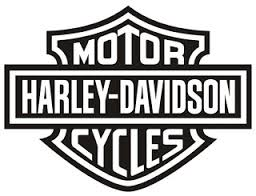

Harley-Davidson
 Historie Twee jonge engineers, William Harley en Arthur Davidson, vrienden sinds hun jeugd, werkten in hun vrije tijd aan hun eerste motorfiets. Twee broers van Arthur, Walther en William, voegden zich al snel bij dit duo, maar een onbekend gebleven Duitse immigrant, die de Franse "De Dion" motor kende, gaf de doorslag aan de totstandkoming van hun bedrijf. In 1903 verscheen een eencilindermotorfiets met een vermogen van 3 pk. Op 30 augustus van dat jaar werd de Harley-Davidson Motor Company opgericht. Bill (William) Harley, de ontwerper van de groep, ging verder studeren op zuigermotoren, en in 1909 verscheen de eerste "V-twin", een zuigermotor met twee cilinders onder een hoek van 45 graden. Deze "V-twin" werd al snel een succes. De "V-twin" werd uitgevonden door Glenn Curtiss, die in 1904 al menig race record verbrak met een tweecilinder V-twin. In de jaren twintig stonden de HD's bekend als bijzonder robuust en betrouwbaar op de toen tamelijk ruwe racecircuits. Aan het eind van de Eerste Wereldoorlog stond er een stenen Harley-Davidsonfabriek in Milwaukee. In de Tweede Wereldoorlog werd de Harley-Davidson internationaal bekend als motorfiets van de bevrijders. Ze werden per schip via Moermansk in groten getale naar Rusland verscheept als oorlogshulp, en reden zodoende ook aan het oostelijk front. Menig verzamelaar heeft later zijn "Liberator" ergens uit een boerenschuur in het Oostblok gehaald en gerenoveerd. Beroemde typen zijn de genoemde "Liberator", de "Knucklehead" (1936), de "Duo Glide" (het eerste model met voor- én achtervering) en de majestueuze "Electra Glide" (1965) (het eerste model met elektrische startmotor). Na een periode van samengaan met andere firma's binnen de AMF-groep (American Machine & Foundry), waarbij ook andere motoren werden voorzien van het HD-merk (Aermacchi-HD en HD-Cagiva), kocht een groep van 13 gefortuneerde liefhebbers, waaronder Willie G. Davidson, kleinzoon van de oprichter,[1] in 1981 de naam Harley-Davidson terug voor 75 miljoen dollar ("The Buyback"). Ze kwamen in 1983 met een nieuwe lijn HD-motorfietsen met het zogeheten Evolution-blok, bijgenaamd Blockhead, op de markt waaronder de 833cc-Sportster, een goedkoper maar kwalitatief goed instapmodel dat was bedoeld als concurrent van de vele Japanse motorfietsen. Velen kochten daarna de grotere V-twins van 1340 cc. In 1999 introduceerde Harley Davidson de 'Twin Cam engine' met inmiddels minstens 1699 cc, uitgezonderd de Sporstermodellen. Er zijn vele modificaties bedacht en men ziet HD's zowel in de meest kale, als in bijzonder opgesmukte versies rondrijden. In de cultfilm Easy Rider speelden HD-motoren van het type "custom", ook wel chopper genoemd, een hoofdrol. Customs met hun vele chroom en extreem hoge sturen, zijn in de jaren zestig (en lang daarna) een hype geweest. Veel merken hebben een vergelijkbaar model uitgebracht.